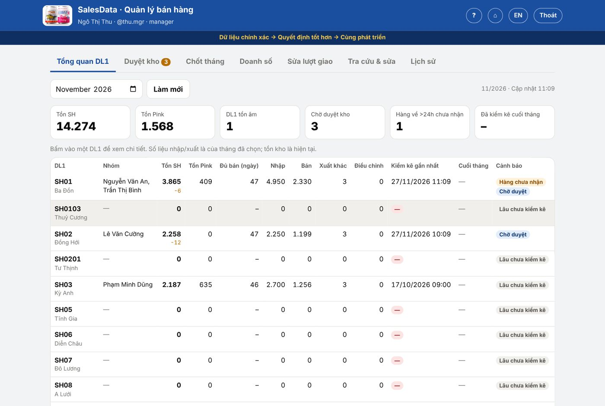
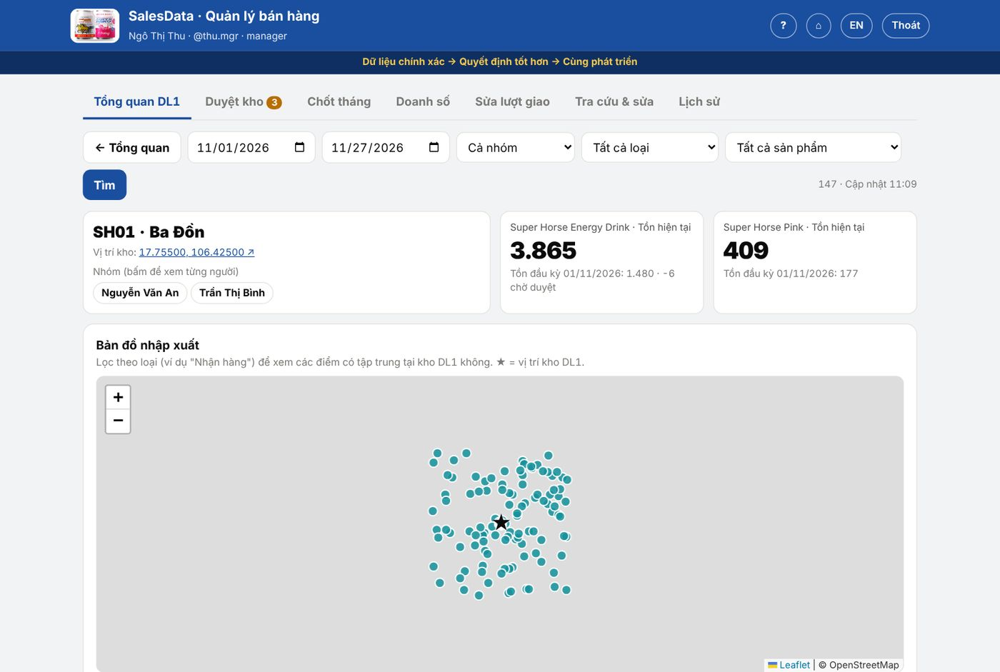
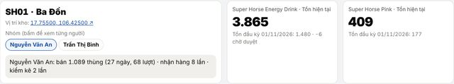
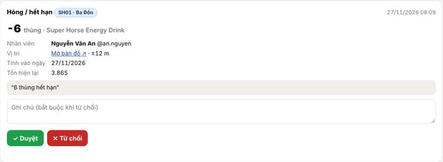
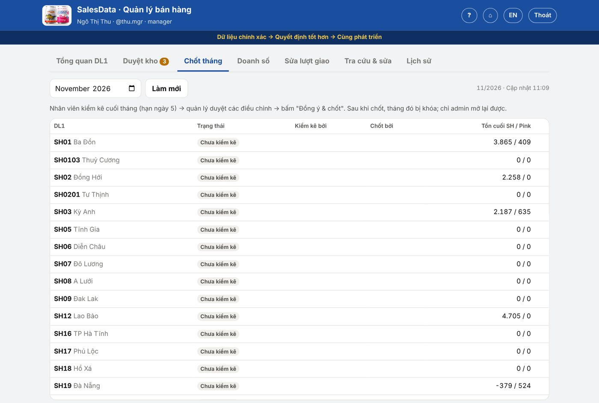
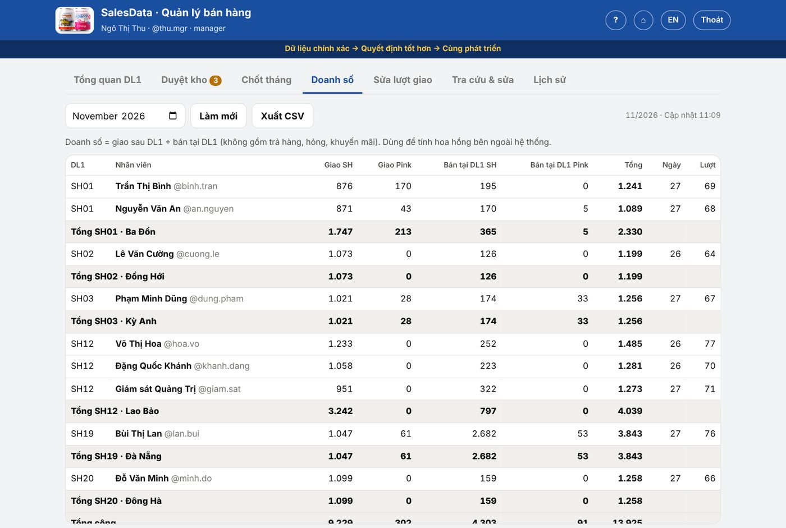
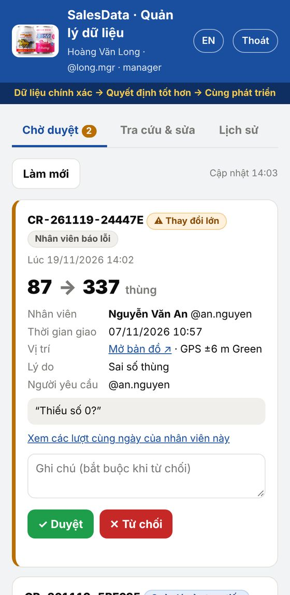
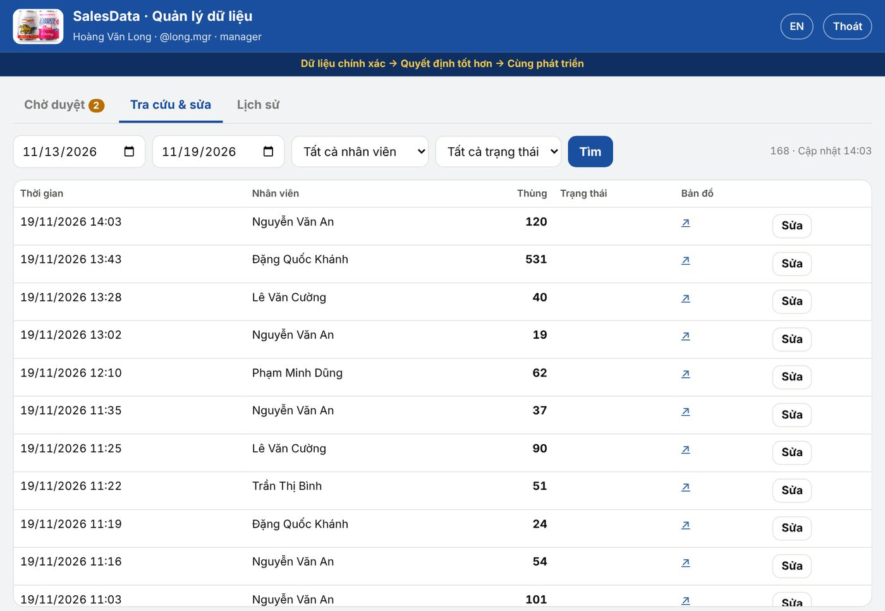
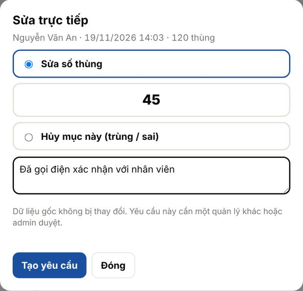
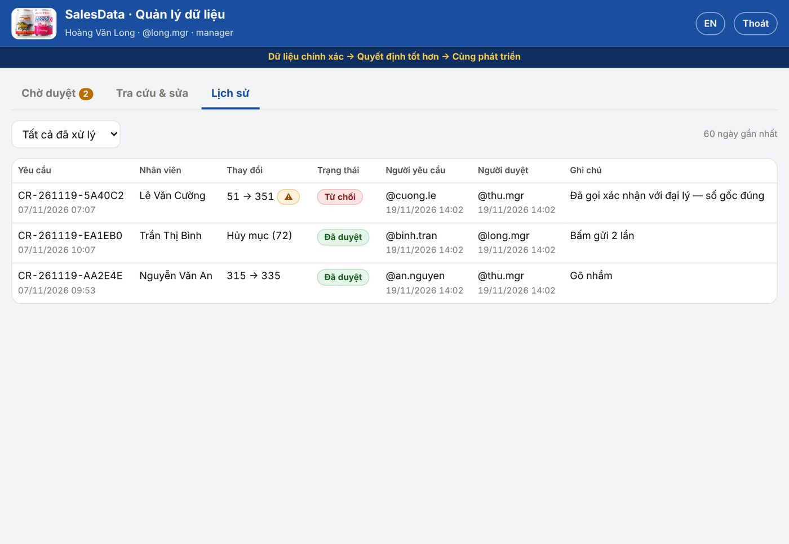

Kho DL1, doanh số và kiểm soát dữ liệuDL1 stock, sales and data control
Bạn theo dõi tồn kho của từng DL1, duyệt các điều chỉnh kho, chốt số liệu cuối tháng, xem doanh số theo nhóm và nhân viên, và duyệt các yêu cầu sửa lượt giao — mọi thao tác đều được ghi lại. You watch each DL1's stock, approve stock adjustments, close the month's figures, see sales by team and employee, and review drop-off corrections. Every action is logged.
1Nguyên tắc quan trọngThe ground rules
| Dữ liệu gốc không bao giờ bị thay đổiThe original is never changed | Sửa = tạo một bản sửa đã duyệt bên cạnh bản gốc. Hủy = đánh dấu "Đã hủy", không xóa.A fix is an approved correction recorded next to the original. Voiding marks an entry as void; nothing is deleted. |
| Không tự duyệtNo self-approval | Bạn không thể duyệt yêu cầu do chính bạn tạo. Quản lý còn lại hoặc admin phải duyệt.You can't approve a request you created. The other manager or the admin must review it. |
| Luôn có lý doAlways give a reason | Bắt buộc khi từ chối và khi sửa trực tiếp. Nhân viên sẽ thấy lý do từ chối.Required to reject and to make a direct fix. Staff see your rejection reason. |
| Mọi chênh lệch kho đều cần duyệtEvery stock difference needs approval | Chênh lệch kiểm kê, hàng hỏng/hết hạn và hàng khuyến mãi chỉ trừ vào kho sau khi bạn duyệt.Stocktake differences, damaged/expired and promotion boxes only come off stock after you approve them. |
| Chỉ sửa được số thùngOnly the box count can change | Hoặc hủy cả mục. GPS và thời gian không bao giờ sửa được.Or the whole entry can be voided. GPS and time can never be changed. |
| Chỉ làm việc qua trang quản lýWork only through the manager page | Bạn không có quyền mở Google Sheet. Mọi thay đổi đi qua manager.html để được ghi nhật ký.You don't have access to the Google Sheet. Every change goes through manager.html so it's logged. |
2Đăng nhậpLogging in
Mở trang manager.html (link do admin gửi), dùng tên đăng nhập và mã PIN SalesData của bạn. Tài khoản phải có Role = manager. Đăng nhập mỗi ngày (hết hạn lúc nửa đêm). Dùng được trên điện thoại hoặc máy tính. Mẹo: lưu trang chủ portal.html — từ đó mở được mọi ứng dụng.
Open manager.html (the link the admin sends you) and use your SalesData username and PIN. Your account must have Role = manager. Log in each day (it ends at midnight). Works on phone or computer. Tip: bookmark the home page portal.html; every app opens from there.
| Tab | Dùng đểUsed for |
|---|---|
| Tổng quan DL1DL1 overview | Tồn kho và nhập/xuất của mọi DL1; bấm vào để xem chi tiết (mục 3–4)Stock and in/out for every DL1; click to drill down (sections 3–4) |
| Duyệt khoStock approvals | Chênh lệch kiểm kê, hàng hỏng, khuyến mãi (mục 5)Stocktake differences, damaged, promotions (section 5) |
| Chốt thángMonth close | Xác nhận và khóa số liệu cuối tháng (mục 6)Agree and lock month-end figures (section 6) |
| Doanh sốSales | Doanh số theo nhóm DL1 và nhân viên (mục 7)Sales by DL1 team and employee (section 7) |
| Sửa lượt giao · Tra cứu & sửa · Lịch sửDrop-off fixes · Search & fix · History | Yêu cầu sửa lượt giao (mục 8–10)Drop-off corrections (sections 8–10) |
Mỗi sáng lúc 7:00, nếu có yêu cầu đang chờ, bạn sẽ nhận một email liệt kê chúng. Không có yêu cầu thì không có email.At 07:00 each morning, if requests are waiting, you get one email listing them. No requests, no email.
3Tổng quan DL1DL1 overview
Trang mở ra ở tab này. Chọn tháng ở trên cùng: cột nhập/xuất là của tháng đó; tồn kho luôn là hiện tại. The page opens on this tab. Pick the month at the top: in/out columns are for that month; stock is always current.

| CộtColumn | Ý nghĩaMeaning |
|---|---|
| Tồn SH / Tồn PinkSH now / Pink now | Tồn hiện tại. Số cam bên dưới = đang chờ duyệt. Số đỏ = tồn âm.Current stock. Orange number below = pending approval. Red = below zero. |
| Đủ bán (ngày)Days of cover | Tồn SH ÷ lượng bán trung bình mỗi ngày (28 ngày gần nhất).SH stock ÷ average daily sales (last 28 days). |
| Nhập · Bán · Xuất khác · Điều chỉnhIn · Sales · Other out · Adjust. | Trong tháng: hàng nhận từ HQ; giao sau DL1 + bán tại DL1; trả hàng + hỏng + khuyến mãi; chênh lệch kiểm kê đã duyệt.For the month: received from HQ; drop-offs + sold at DL1; returns + damaged + promotions; approved stocktake differences. |
| Cuối thángMonth-end | Trạng thái kiểm kê cuối tháng: Chưa kiểm kê / Đã kiểm kê / Đã chốt.Month-end status: Not counted / Counted / Closed. |
Cảnh báoAlerts
| Tồn âmBelow zero | Thiếu lần nhận hàng hoặc ghi xuất quá số → yêu cầu kiểm kê.A receipt is missing or too much was logged out; ask for a stocktake. |
| Sắp hếtLow stock | Dưới mức tồn tối thiểu, hoặc đủ bán dưới 7 ngày.Below the minimum stock, or under 7 days of cover. |
| Hàng chưa nhậnDelivery not received | Phiếu xuất HQ quá 24 giờ chưa được xác nhận.An HQ dispatch not confirmed after 24 hours. |
| Chờ duyệtPending | Có mục kho đang chờ bạn duyệt.Stock items are waiting for your approval. |
| Lâu chưa kiểm kêCount overdue | Hơn 31 ngày chưa kiểm kê.No stocktake for over 31 days. |
| Quá hạn kiểm kê CTMonth-end overdue | Đã qua ngày 5 mà chưa kiểm kê cuối tháng.Past the 5th without a month-end count. |
4Xem chi tiết một DL1 và từng nhân viênDrilling into a DL1 and each employee
- Bấm vào một DL1 trong bảng tổng quanClick a DL1 in the overviewHiện vị trí kho, nhóm, tồn hiện tại và tồn đầu kỳ.Shows the warehouse location, team, current and opening stock.
- Bấm tên một nhân viênClick an employee's nameMọi bảng và bản đồ chỉ còn dữ liệu của người đó, kèm tóm tắt: thùng bán, số ngày, số lượt, số lần nhận hàng và kiểm kê.Every table and the map filter to that person, with a summary: boxes sold, days, entries, receipts and stocktakes.
- Lọc theo loại và sản phẩmFilter by type and productVí dụ chọn "Nhận hàng" để xem các điểm nhận hàng có tập trung tại ★ kho DL1 không.For example choose "Received" to check whether receipts cluster at the ★ DL1 warehouse.


| Trong nhật kýIn the log | |
|---|---|
| Thời gian thực / Tính vào ngàyReal time / Counts for | Lúc thực sự ghi. "Tính vào ngày" khác khi ví dụ kiểm kê cuối tháng làm ngày 3 được tính cho ngày 30.When it was actually entered. "Counts for" differs e.g. when a month-end count made on the 3rd counts for the 30th. |
| Dấu hiệuFlags | GPS yếu · Nhập muộn (hơn 6 giờ sau) · Tồn âm · Sau chốt (tới sau khi tháng đã khóa) · Lệch phiếu · offline.Weak GPS · Late entry (6+ hours later) · Below zero · After close (arrived after the month was locked) · Qty mismatch · offline. |
Bên dưới: lịch sử kiểm kê (đếm / hệ thống / chênh), phiếu xuất HQ và các tháng đã chốt.Below: stocktake history (counted / system / difference), HQ dispatches and closed months.
5Duyệt khoStock approvals
Mỗi thẻ là một mục chờ duyệt: chênh lệch kiểm kê, hàng hỏng/hết hạn, hoặc khuyến mãi. Số trên tab là số mục đang chờ. Each card is one item waiting: a stocktake difference, damaged/expired or promotion boxes. The number on the tab is how many are waiting.

- Đọc thẻRead the cardSố thùng (+/−), sản phẩm, DL1, nhân viên, lý do. Với kiểm kê: số đếm, số hệ thống, chênh lệch; nhãn Số dư đầu kỳ (lần kiểm kê đầu tiên) hoặc Cuối tháng.Boxes (+/−), product, DL1, employee, reason. For counts: counted, system, difference; labelled Opening balance (first count) or Month-end.
- Kiểm tra nếu cầnCheck if neededMở bản đồ, xem nhật ký DL1, gọi nhân viên — nhất là chênh lệch lớn.Open the map, look at the DL1 log, call the employee, especially for large differences.
- Duyệt hoặc từ chốiApprove or rejectTừ chối cần lý do — nhân viên sẽ thấy. Duyệt thì số tồn được sửa ngay.Rejecting needs a reason, which the employee sees. Approving updates the stock at once.
Lần kiểm kê đầu tiên của mỗi DL1 tạo số dư đầu kỳ. Hãy duyệt các mục này ngay khi đưa vào sử dụng.Each DL1's first stocktake creates its opening balance. Approve these promptly at go-live.
6Chốt thángMonth close

- Nút Đồng ý & chốt chỉ hiện khi DL1 đã kiểm kê cuối tháng, và bị khóa nếu còn mục chờ duyệt.The Agree & close button only shows once the DL1 has done its month-end count, and stays disabled while anything is pending.
- Sau khi chốt: tồn cuối tháng được lưu; mọi mục ghi muộn cho tháng đó được tính sang ngày nhận và đánh dấu "Sau chốt".After closing: the closing stock is saved; anything arriving late for that month is posted to the day it arrived and flagged "After close".
- Cần sửa tháng đã chốt? Liên hệ admin để mở lại (phải có lý do).Need to change a closed month? Ask an admin to reopen it (a reason is required).
7Doanh số theo nhóm và nhân viênSales by team and employee
Doanh số = giao sau DL1 + bán tại DL1. Không gồm trả hàng, hàng hỏng, khuyến mãi. Bảng nhóm theo DL1, có tổng từng nhóm và tổng cộng; nhân viên không thuộc DL1 nằm ở bảng riêng. Bấm Xuất CSV để tính hoa hồng bên ngoài hệ thống. Sales = drop-offs + sold at DL1. Returns, damaged and promotions are excluded. Grouped by DL1 with team and grand totals; staff without a DL1 are listed separately. Click Export CSV for commission calculated outside the system.

8Sửa lượt giao (yêu cầu báo lỗi)Drop-off fixes (reported mistakes)
Mỗi yêu cầu là một thẻ. Thẻ có viền cam ⚠ Thay đổi lớn (từ 200 thùng) được xếp lên đầu.Each request is a card. Cards with an orange edge marked ⚠ Large change (200 boxes or more) are listed first.


Đọc một thẻ yêu cầuReading a request card
| Thay đổiChange | Số hiện tại → số đề nghị, hoặc Hủy mục.Current number → proposed number, or Void entry. |
| NguồnSource | Nhân viên báo lỗi hoặc Quản lý sửa trực tiếp.Reported by employee or Direct fix by manager. |
| Nhân viên · Thời gian · Vị tríEmployee · Time · Location | Chi tiết lượt giao gốc. Mở bản đồ xem đúng điểm giao.Details of the original drop-off. Open map shows the exact spot. |
| Lý do · Ghi chúReason · Note | Điều người yêu cầu đã chọn và viết.What the requester chose and wrote. |
| Xem các lượt cùng ngàyShow other drop-offs that day | Liệt kê mọi lượt của nhân viên đó trong ngày (dòng tô vàng là lượt đang xét). Rất hữu ích để phát hiện mục trùng.Lists all that employee's drop-offs that day (the highlighted row is the one in question). Very useful for spotting duplicates. |
Duyệt hoặc từ chốiApprove or reject
- Kiểm traCheckXem bản đồ, các lượt cùng ngày; gọi nhân viên hoặc đại lý nếu là thay đổi lớn.Look at the map and same-day drop-offs; call the employee or distributor for large changes.
- DuyệtApproveBấm ✓ Duyệt. Ghi chú không bắt buộc.Tap ✓ Approve. A note is optional.
- Hoặc từ chốiOr rejectViết lý do vào ô ghi chú, rồi bấm ✕ Từ chối. Nhân viên sẽ đọc lý do này — viết rõ ràng, lịch sự.Write the reason in the note box, then tap ✕ Reject. The employee reads this reason, so keep it clear and polite.
Nếu thẻ ghi "Bạn tạo yêu cầu này — cần một quản lý khác hoặc admin duyệt", nút Duyệt/Từ chối sẽ không hiện. Hãy báo quản lý còn lại.If a card says "You created this request — another manager or admin must review it", there are no Approve/Reject buttons. Let the other manager know.
9Tra cứu & sửa trực tiếpSearch & direct fixes
Dùng khi bạn phát hiện lỗi mà nhân viên chưa báo, hoặc khi đã quá hạn báo lỗi.Use it when you find a mistake staff haven't reported, or when it's past their reporting deadline.
- Tìm lượt giaoFind the entryChọn khoảng ngày, nhân viên, trạng thái (đã sửa / đã hủy / đang chờ), bấm Tìm.Pick a date range, employee and status (amended / voided / pending), then tap Search.
- Bấm SửaTap FixCửa sổ hiện lịch sử sửa của mục đó (nếu có).The window shows that entry's correction history, if any.
- Chọn loại sửaChoose the fixSửa số thùng (nhập số đúng) hoặc Hủy mục này.Change box count (enter the correct number) or Void this entry.
- Ghi lý do (bắt buộc)Write the reason (required)Ví dụ: "Đã gọi điện xác nhận với nhân viên".For example: "Confirmed by phone with the employee".
- Bấm Tạo yêu cầuTap Create requestYêu cầu vào hàng chờ — quản lý còn lại hoặc admin phải duyệt.It goes into the queue; the other manager or the admin must approve it.


10Lịch sửHistory
Tab Lịch sử liệt kê mọi yêu cầu đã xử lý trong 60 ngày gần nhất: Đã duyệt, Từ chối, Đã hủy yêu cầu — kèm người yêu cầu, người duyệt, thời gian và ghi chú. Lọc theo trạng thái ở trên cùng. The History tab lists every decided request from the last 60 days (Approved, Rejected, Cancelled) with who asked, who reviewed, when, and the notes. Filter by status at the top.

11Cách làm tốtGood practice
- Mỗi sáng xem Tổng quan DL1: xử lý cảnh báo đỏ (tồn âm, quá hạn) trước.Each morning check the DL1 overview: deal with red alerts (below zero, overdue) first.
- Từ ngày 28: nhắc các DL1 kiểm kê cuối tháng; đến ngày 5 duyệt hết chênh lệch và chốt tháng.From the 28th: remind DL1s to do the month-end count; by the 5th approve all differences and close the month.
- Chênh lệch kiểm kê lặp lại ở cùng một DL1 hoặc cùng một người là dấu hiệu cần tìm hiểu.Repeated stocktake differences at the same DL1 or by the same person are worth investigating.
- Xử lý hàng chờ mỗi ngày, đặc biệt trước ngày 3 hằng tháng để chốt số liệu tháng trước.Clear the queue every day, especially before the 3rd of each month so last month's figures can be closed.
- Với thay đổi lớn (⚠): luôn gọi xác nhận với nhân viên hoặc đại lý trước khi duyệt.For large changes (⚠), always confirm by phone with the employee or distributor before approving.
- Với mục trùng: mở "các lượt cùng ngày" — hai lượt cùng số thùng, cách nhau vài phút, cùng vị trí là dấu hiệu rõ.For duplicates, open the same-day list. Two entries with the same boxes, minutes apart, at the same spot are a clear sign.
- Viết lý do đủ để người khác hiểu sau 6 tháng.Write reasons that someone else will still understand in 6 months.
- Không chia sẻ mã PIN, không đăng nhập hộ người khác.Never share your PIN or log in for someone else.